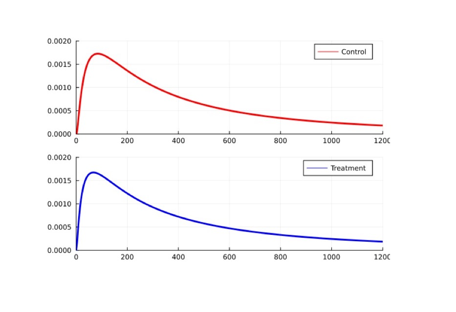
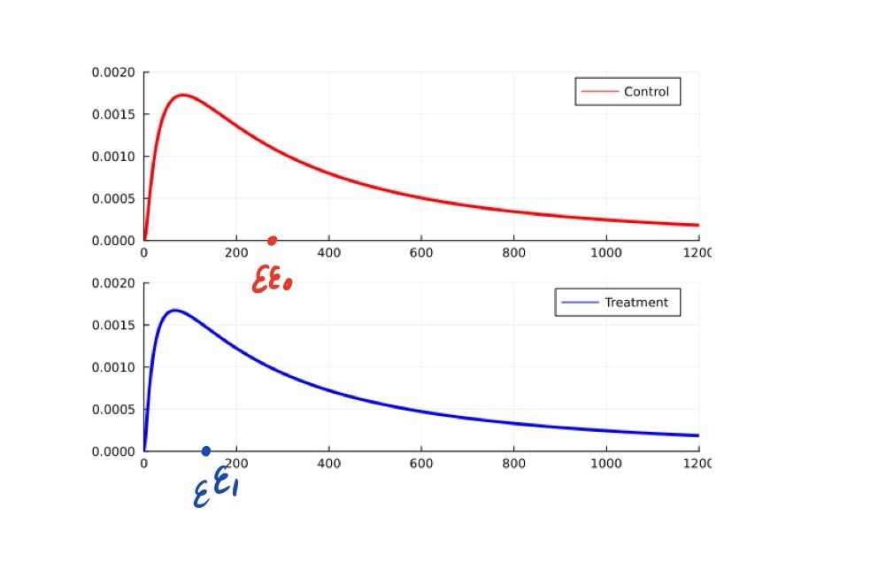
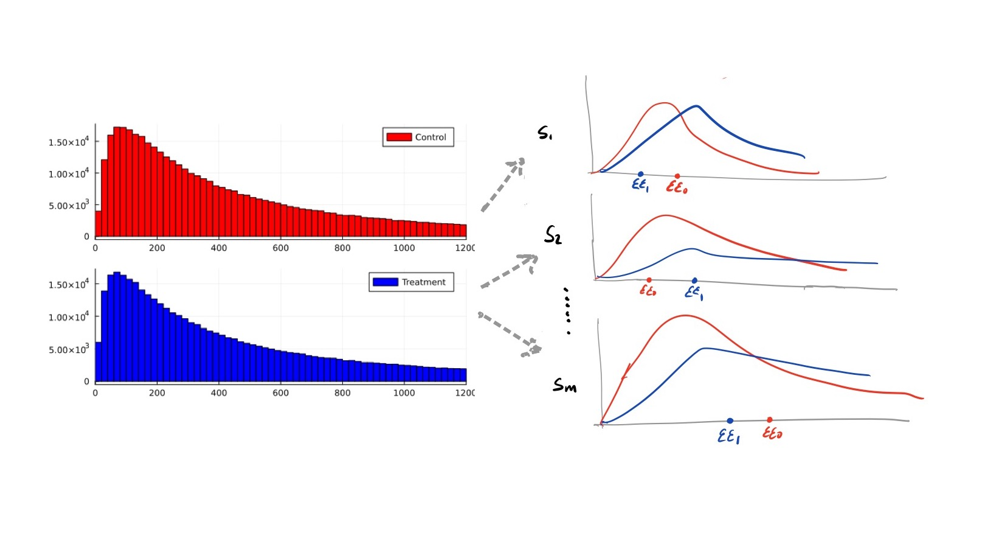

Inequality Sensitive Optimal Treatment Assignment (This paper)https://equistatlab.org/
\(\textcolor{red}{y(a)}\)
\(\textcolor{blue}{y(b)}\)
Theorem 1 (With Marc Fleurbaey) If you know where the asymptotes lie, then you know \(f\).
\[f(y)=\log_2 \kappa \cdot y^{\frac{1}{\log_2 \kappa}} \]
| \(\textcolor{red}{a}\) | \(s_1\) |
|---|---|
| \(y_{1}\) | \(4\) |
| \(y_{2}\) | \(5\) |
| \(y_{3}\) | \(6\) |
| \(\textcolor{blue}{b}\) | \(s_1\) |
|---|---|
| \(y_{1}\) | \(1\) |
| \(y_{2}\) | \(8\) |
| \(y_{3}\) | \(12\) |
| \(\textcolor{red}{a}\) | \(s_1\) |
|---|---|
| \(y_{1}\) | \(4\) |
| \(y_{2}\) | \(5\) |
| \(y_{3}\) | \(6\) |
| \(E[y_i]\) | \(\textcolor{red}{5}\) |
| \(\textcolor{blue}{b}\) | \(s_1\) |
|---|---|
| \(y_{1}\) | \(1\) |
| \(y_{2}\) | \(8\) |
| \(y_{3}\) | \(12\) |
| \(E[y_i]\) | \(\boxed{\textcolor{blue}{7}}\) |
| \(\textcolor{red}{a}\) | \(s_1\) |
|---|---|
| \(\ln(y_{1})\) | \(1.39\) |
| \(\ln(y_{2})\) | \(1.61\) |
| \(\ln(y_{3})\) | \(1.79\) |
| \(E[\ln(y_i)]\) | \(\boxed{\textcolor{red}{1.60}}\) |
| \(\textcolor{blue}{b}\) | \(s_1\) |
|---|---|
| \(\ln(y_{1})\) | \(0\) |
| \(\ln(y_{2})\) | \(2.08\) |
| \(\ln(y_{3})\) | \(2.48\) |
| \(E[\ln(y_i)]\) | \(\textcolor{blue}{1.52}\) |
When the outcome distribution for each treatment is not known, avoid comparing treatments in terms of \(E[f(\textcolor{red}{y(a)})]\) and \(E[f(\textcolor{blue}{y(b)})]\)
| \(\textcolor{red}{a}\) | \(s_1\) | \(s_2\) | |
|---|---|---|---|
| \(y_{1}\) | \(6\) | \(2\) | |
| \(y_{2}\) | \(6\) | \(2\) | |
| \(y_{3}\) | \(6\) | \(2\) |
| \(\textcolor{blue}{b}\) | \(s_1\) | \(s_2\) | |
|---|---|---|---|
| \(y_{1}\) | \(8\) | \(1\) | |
| \(y_{2}\) | \(8\) | \(1\) | |
| \(y_{3}\) | \(8\) | \(1\) |
Prior on \(\{s_1,s_2\}\)
\(\pi = (2/3,1/3)\)
| \(\textcolor{red}{a}\) | \(s_1\) | \(s_2\) | |
|---|---|---|---|
| \(y_{1}\) | \(6\) | \(2\) | |
| \(y_{2}\) | \(6\) | \(2\) | |
| \(y_{3}\) | \(6\) | \(2\) | |
| \(E[y_i]\) | \(6\) | \(2\) | |
| \(E[E[y_i]]\) | \(\textcolor{red}{4.67}\) |
| \(\textcolor{blue}{b}\) | \(s_1\) | \(s_2\) | |
|---|---|---|---|
| \(y_{1}\) | \(8\) | \(1\) | |
| \(y_{2}\) | \(8\) | \(1\) | |
| \(y_{3}\) | \(8\) | \(1\) | |
| \(E[y_i]\) | \(8\) | \(1\) | |
| \(E[E[y_i]]\) | \(\boxed{\textcolor{blue}{5.67}}\) |
\(\pi = (2/3,1/3)\)
| \(\textcolor{red}{a}\) | \(s_1\) | \(s_2\) | |
|---|---|---|---|
| \(\ln(y_{1})\) | \(1.79\) | \(0.69\) | |
| \(\ln(y_{2})\) | \(1.79\) | \(0.69\) | |
| \(\ln(y_{3})\) | \(1.79\) | \(0.69\) | |
| \(E[\ln(y_i)]\) | \(1.79\) | \(0.69\) | |
| \(E[E[\ln(y_i)]]\) | \(\boxed{\textcolor{red}{1.43}}\) |
| \(\textcolor{blue}{b}\) | \(s_1\) | \(s_2\) | |
|---|---|---|---|
| \(2.08\) | \(0\) | ||
| \(2.08\) | \(0\) | ||
| \(2.08\) | \(0\) | ||
| \(2.08\) | \(0\) | ||
| \(\textcolor{blue}{1.39}\) |

\(\textcolor{red}{\mathcal{EE_0}} = f^{-1}(E[f(\textcolor{red}{y(a)})])\)
\(\textcolor{blue}{\mathcal{EE_1}}= f^{-1}(E[f(\textcolor{blue}{y(b)})])\)
To avoid conflating risk aversion and inequality aversion, use \(\mathcal{EE}\).
Theorem 2 Let \(R\) satisfy Continuity, Weak Dominance, Weak Pareto for No Risk, and Statistical Extension. For all \(y,y^{'} \in \Upsilon\), one has
\[yPy^{'}\] \[\Leftrightarrow\] \[(\mathcal{EE}(y^{1}),...,\mathcal{EE}(y^{m})) \succ (\mathcal{EE}(y^{'1}),...,\mathcal{EE}(y^{'m}))\]
Identify each treatment with the profile \((\mathcal{EE}^1,...,\mathcal{EE}^m)\)
| \(\textcolor{red}{a}\) | \(s_1\) | \(s_2\) | |
|---|---|---|---|
| \(y_{1}\) | \(4\) | \(2\) | |
| \(y_{2}\) | \(5\) | \(2\) | |
| \(y_{3}\) | \(6\) | \(2\) |
| \(\textcolor{blue}{b}\) | \(s_1\) | \(s_2\) | |
|---|---|---|---|
| \(y_{1}\) | \(3\) | \(1\) | |
| \(y_{2}\) | \(8\) | \(1\) | |
| \(y_{3}\) | \(10\) | \(1\) |
Prior on \(\{s_1,s_2\}\)
\(\pi = (2/3,1/3)\)
| \(\textcolor{red}{a}\) | \(s_1\) | \(s_2\) | |
|---|---|---|---|
| \(y_{1}\) | \(4\) | \(2\) | |
| \(y_{2}\) | \(5\) | \(2\) | |
| \(y_{3}\) | \(6\) | \(2\) | |
| \(\mathcal{EE}[y_i]\) | \(4.93\) | \(2\) | |
| \(E[\mathcal{EE}[y_i]]\) | \(\textcolor{red}{3.95}\) |
| \(\textcolor{blue}{b}\) | \(s_1\) | \(s_2\) | |
|---|---|---|---|
| \(y_{1}\) | \(3\) | \(1\) | |
| \(y_{2}\) | \(8\) | \(1\) | |
| \(y_{3}\) | \(10\) | \(1\) | |
| \(\mathcal{EE}[y_i]\) | \(6.21\) | \(1\) | |
| \(E[\mathcal{EE}[y_i]]\) | \(\boxed{\textcolor{blue}{4.48}}\) |
\(\pi = (2/3,1/3)\)
| \(\textcolor{red}{a}\) | \(s_1\) | \(s_2\) | |
|---|---|---|---|
| \(\ln(y_{1})\) | \(1.39\) | \(0.69\) | |
| \(\ln(y_{2})\) | \(1.61\) | \(0.69\) | |
| \(\ln(y_{3})\) | \(1.79\) | \(0.69\) | |
| \(E[\ln(y_i)]\) | \(1.60\) | \(0.69\) | |
| \(E[E[\ln(y_i)]]\) | \(\boxed{\textcolor{red}{1.29}}\) |
| \(\textcolor{blue}{b}\) | \(s_1\) | \(s_2\) | |
|---|---|---|---|
| \(1.1\) | \(0\) | ||
| \(2.08\) | \(0\) | ||
| \(2.30\) | \(0\) | ||
| \(1.82\) | \(0\) | ||
| \(\textcolor{blue}{1.22}\) |
EETE)\[\tau(s):=\textcolor{blue}{ee^{s}(b)} - \textcolor{red}{ee^{s}(a)}\]
Thanks to Theorem 2, the decision problem boils down to selecting \(\delta\) in order to obtain the most favorable profile
\[(ee^{1}(\delta(P_s),...,ee^{m}(\delta(P_s))\]
according to the preferences \(\succeq\) over the restricted set \(\Upsilon_{1}\), and given knowledge of the sampling distribution \(P_s\).
\[\max_{\delta(P_s) \in [0,1]} E_{\pi}\left[ee^{s}(\delta(P_s)) |S(P_s)\right] \]
\[\max_{\delta(P_s) \in [0,1]} \min_{s \in S(P_s)} ee^{s}(\delta(P_s))\]
\[\min_{\delta(P_s) \in [0,1]} \max_{s \in S(P_s)} \left[ \max \{\textcolor{red}{ee^{s}(a)}, \textcolor{blue}{ee^{s}(b)}\} - ee^{s}(\delta(P_s))\right]\]
Bayesian\[\max_{\delta(P_s) \in [0,1]} E_{\pi}\left[\boxed{ee^{s}(\delta(P_s))} |S(P_s)\right] \]
Maximin\[\max_{\delta(P_s) \in [0,1]} \min_{s \in S(P_s)} \boxed{ee^{s}(\delta(P_s))}\]
Minimax regret\[\min_{\delta(P_s) \in [0,1]} \max_{s \in S(P_s)} \left[ \max \{\textcolor{red}{ee^{s}(a)}, \textcolor{blue}{ee^{s}(b)}\} - \boxed{ee^{s}(\delta(P_s))}\right]\]
Theorem 3 Assume the technical conditions hold and that the true state \(s\) is partially identified. Then
\[\delta^{B}(P_s) = 1 \left(E_{\pi}\left[\textcolor{blue}{ee(b)}|S(P_s)\right] - E_{\pi}\left[\textcolor{red}{ee(a)}|S(P_s)\right] > 0 \right)\]
\[\delta^{M}(P_s) = 1 \left(\textcolor{blue}{ee^{s_{w}}(b)} - \textcolor{red}{ee^{s_{w}}(a)} > 0 \right)\]
\[\textcolor{red}{ee^{s_{a}}(a)} - ee^{s_{a}}(\delta^{R}(P_s)) = \textcolor{blue}{ee^{s_{b}}(b)} - ee^{s_{b}}(\delta^{R}(P_s))\]
\[\delta^{B}(P_s) = 1 \left(E_{\pi}\left[\textcolor{blue}{ee(b)}|S(P_s)\right] - E_{\pi}\left[\textcolor{red}{ee(a)}|S(P_s)\right] > 0 \right)\]
\[\delta^{M}(P_s) = 1 \left(\textcolor{blue}{ee^{s_{w}}(b)} - \textcolor{red}{ee^{s_{w}}(a)} > 0 \right)\]
\[\textcolor{red}{ee^{s_{a}}(a)} - ee^{s_{a}}(\delta^{R}(P_s)) = \textcolor{blue}{ee^{s_{b}}(b)} - ee^{s_{b}}(\delta^{R}(P_s))\]
Remark
The role of identification
(Manski 2004, 2019; Stoye 2009)
\(y_{i}^{s}(d) \in \{\underline{p},\bar{p}\}\) for \(d = a, b\)
\(\underline{p},\bar{p} \in (0,1]\)
\(y(a)\) is known
\(p(a)\) = fraction of individuals that obtain outcome \(\bar{p}\) in \(y(a)\)
\[\delta^*_N = 1 - p(a)\]
\[\delta^*_A > \delta^*_N\]
If the \(IN\) evaluator accepts the innovation, so will the \(IA\) evaluator but not the other way around.
If either evaluator accepts the innovation, they set \(\delta = 1\), and if they don’t accept it, they set \(\delta = 0\).
with solution \(\delta^{*}_{IN} = 0\) (Manski 2004).
An \(IA\) maximin evaluator maximizes \(min_{s \in S} \{ee^{s}(\delta)\}\),
\(ee^{s}(\delta) = f^{-1}(p(a) + (p^{s}(b) - p(a))\delta)\)
Because \(f^{-1}\) is monotone, both problems share the same solution.
EETE estimation workflowUse Theorem 1 to help determine which social preference under certainty to bring into the analysis.
Use Theorem 2 to decide how to incorporate that social preferences into a world where risk, uncertainty or ambiguity play a prominent role.
Use Theorem 3 to identify the correct optimal statistical treatment rule needed for the problem at hand.
https://equistatlab.org/Thank You!An extension of Theorem 1 in Fleurbaey (2010).
Let \(y,y^{'} \in \Upsilon\) and \((y(t))_{t \in \mathbb{N}} \in \Upsilon^{\mathbb{N}}\) be such that \(y(t) \to y\). If \(y(t)Ry^{'}\) for all \(t\in \mathbb{N}\), then \(yRy^{'}\). If \(y^{'}Ry(t)\) for all \(t\in \mathbb{N}\), then \(y^{'}Ry\).
For all \(y, y^{'} \in \Upsilon\), one has \(y R y^{'}\) if for all \(s \in S, [y^{s}] R [y^{s'}]\).
For all \([y^{s}], [y^{'s}] \in \Upsilon^{c}\), one has \([y^{s}]P[y^{'s}]\) if, for all \(i \in N, y_{i}^{s}>y_{i}^{'s}\).
For all \((y_{i}),(y_{i}^{'}) \in \Upsilon^{e}\), one has \((y_{i})P(y_{i}^{'})\) if \(y_{i} \succ y_{i}^{'}\).
Let \(\mathcal{EE}(y^{s})\) be the continuous function such that, for each \(y^{s} \in \mathbb{R}^{n}\),
\[[y^{s}]\space I\space [(\mathcal{EE}(y^{s}),...,\mathcal{EE}(y^{s}))].\]
Theorem 2 Let \(\Upsilon = {\mathbb{R}}^{nm}\) and \(R\) satisfy Continuity, Weak Dominance, Weak Pareto for No Risk, and Statistical Extension. For all \(y,y^{'} \in \Upsilon\), one has
\[yPy^{'}\] \[iff\] \[(\mathcal{EE}(y^{1}),...,\mathcal{EE}(y^{m})) \succ (\mathcal{EE}(y^{'1}),...,\mathcal{EE}(y^{'m}))\]
Meager 2022 estimates posterior distributions of the effect of microcredit interventions on consumption using data from randomized trials that expand access to microcredit in five countries:
- Bosnia
- India
- Mexico
- Mongolia
- MoroccoMeager’s Bayesian hierarchical model
\[ y_{ik}(T_{ik}) \sim \texttt{LogNormal}(\mu_k + \zeta_k T_{ik},\sigma_k \lambda_k^{T_{ik}}) \text{ for } k = 1,...,5; \] \[ 0.1\mu_k, 0.1\zeta_k, \log(\sigma_k), \log(\lambda_k) \sim \texttt{MvN}(0, 10I) \text{ for } k = 1,...,5. \]
I compute mean treatment effects and egalitarian equivalent treatment effects using Meager’s Markov Chain Monte Carlo (MCMC) output, denoted \(\hat{\pi}\), which contains three chains with four thousand draws per chain.
The egalitarian equivalent at every draw can be computed using the expression
\[ \mathcal{EE}(y_k(d)) = e^{\mu_k + \zeta_k d + \frac{1}{2}\frac{1}{\log_2 \kappa} \left(\sigma_k \lambda_k^d\right)^{2}}. \]
Posterior distributions of the mean (inequality neutral) treatment effects (\(\tau\)) and the egalitarian equivalent treatment effects (\(\tau_{ee}\)) for \(\kappa = 0.5\). All units are 2009 USD PPP per two weeks.
| \(E_{\hat{\pi}}[\tau]\) | \(P_{\hat{\pi}}[\tau>0]\) | \(E_{\hat{\pi}}[\tau_{ee}]\) | \(P_{\hat{\pi}}[\tau_{ee}>0]\) | |
|---|---|---|---|---|
| Bosnia | 13.82 | 82.5% | -3.11 | 14.3% |
| India | 3.00 | 83.1% | -1.20 | 29.1% |
| Mexico | 5.65 | 97.5% | -3.76 | 2.7% |
| Mongolia | 8.58 | 88.1% | -1.35 | 35.0% |
| Morocco | -2.57 | 22.7% | 2.55 | 82.4% |
Table 1: Bayesian quantile treatment effects on consumption (from Table 1 in Meager 2022)
JobCorps is a widely studied RCT education and training program for disadvantaged youth.
The evaluator only observes wages for those individuals who are employed.
\(ee^{s}(a)\) and \(ee^{s}(b)\) are not point identified and therefore \(\tau_{ee}(s)\) is also not point identified at \(s\).
Partial identification is achievable under relatively mild assumptions.
| \(ee^L(a)\) | \(ee^U(a)\) | \(ee^L(b)\) | \(ee^U(b)\) | |
|---|---|---|---|---|
| Horowitz and Manski | 4.1 | 9 | 3.8 | 8.6 |
| Lee | 6.6 | 6.6 | 6.5 | 7.7 |
| Chen and Flores | 6.6 | 6.6 | 6.8 | 7.7 |
| Horowitz and Manski Bounds | Lee Bounds | Chen and Flores Bounds | |
|---|---|---|---|
| \(\kappa = 0.5\) | 0.42 | 0.95 | 1 |
| Horowitz and Manski Bounds | Lee Bounds | Chen and Flores Bounds | |
|---|---|---|---|
| \(\kappa = 0.5\) | 0.42 | 0.95 | 1 |
| Inequality Neutral | 0.59 | 0.66 | 1 |
Social preferences